Discover Ibiza
Our personal favourite spots, hidden gems and everything you need to know for your stay.
Unsere persönlichen Lieblingsorte, Geheimtipps und alles, was ihr für euren Aufenthalt wissen müsst.
Our Ibiza Map
Unsere Ibiza-Karte
Tap a pin to jump to the details
Tippe auf einen Pin für Details
Getting In
Anreise

You can fly to Ibiza airport which is easily accessible during the summer months from any major European airport. Please plan your trip so that you will already be available by lunchtime on the 12th of September.
Du solltest zum Flughafen Ibiza fliegen, der in den Sommermonaten von allen größeren europäischen Flughäfen aus gut erreichbar ist. Bitte plane deine Reise so, dass du am 12. September schon zur Mittagszeit verfügbar bist.
Accommodation
Unterkunft
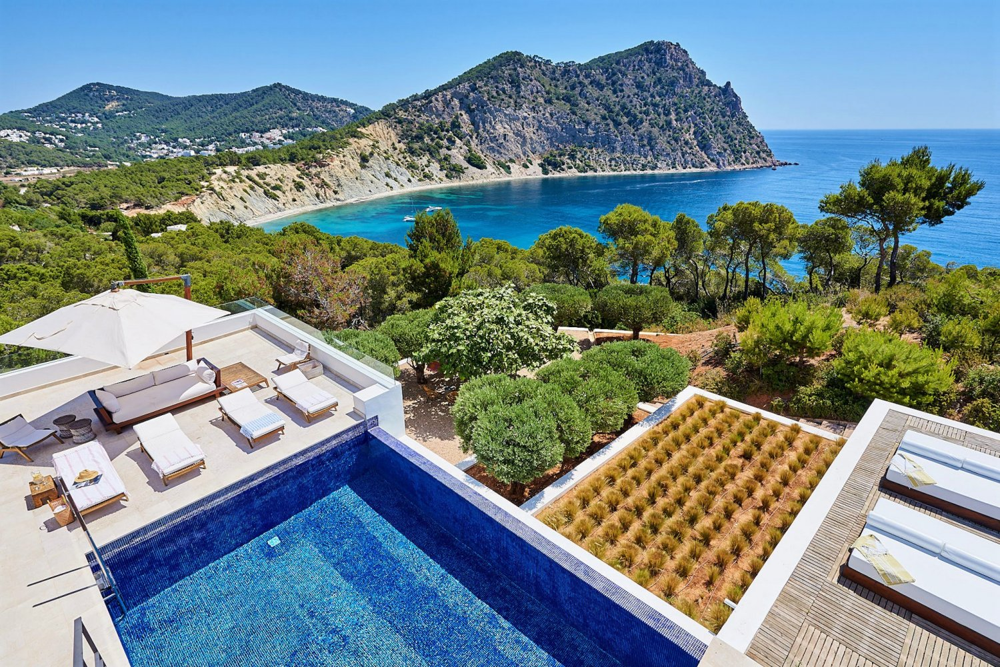
When arranging your accommodation, we encourage you to find a place in the south of the island. Ibiza, Sant Antoni or Sant Josep are all in close proximity to our wedding venue. There are a wide variety of hotels and AirBnBs available on the island.
Bei der Suche nach einer Unterkunft empfehlen wir dir, dich im Süden der Insel umzusehen. Ibiza, Sant Antoni oder Sant Josep liegen alle in unmittelbarer Nähe zu unserer Hochzeitslocation. Auf der Insel gibt es eine große Auswahl an Hotels und AirBnBs.
- Hotel Portmany — centrally located in Sant Antoni, right on the promenadezentral in Sant Antoni, direkt an der Promenade
- Aparthotel Puerto Cala Vadella — relaxed aparthotel in the beautiful bay of Cala Vadellaentspanntes Aparthotel in der schönen Bucht von Cala Vadella
Getting Around
Fortbewegung

We strongly recommend renting a car as early as possible — availability gets tight during peak season. While the island isn't huge, everything is spread out across winding roads, and getting from A to B without your own wheels can be a real hassle. Uber and local taxis do exist, but they are limited in availability and add up quickly cost-wise. With a rental car you'll have the freedom to explore hidden beaches, cliff-side restaurants, and sunset spots at your own pace.
Wir empfehlen dringend, so früh wie möglich einen Mietwagen zu organisieren — in der Hochsaison sind die Verfügbarkeiten schnell ausgeschöpft. Die Insel ist zwar nicht riesig, aber alles ist über kurvige Straßen verstreut, und ohne eigenes Auto wird es schnell umständlich. Uber und lokale Taxis gibt es zwar, aber sie sind nur begrenzt verfügbar und werden schnell teuer. Mit einem Mietwagen habt ihr die Freiheit, versteckte Strände, Klippen-Restaurants und Sunset Spots in eurem eigenen Tempo zu erkunden.
Shuttle Service
Shuttle Service

We will provide a complimentary shuttle to and from the venue on the day of the wedding (September 13th). Pickup points:
Wir bieten am Hochzeitstag (13. September) einen kostenlosen Shuttle zur und von der Location an. Abholpunkte:
- Ibiza Town / Eivissa
- Sant Antoni de Portmany
- Sant Josep de sa Talaia
Cala d'Hort
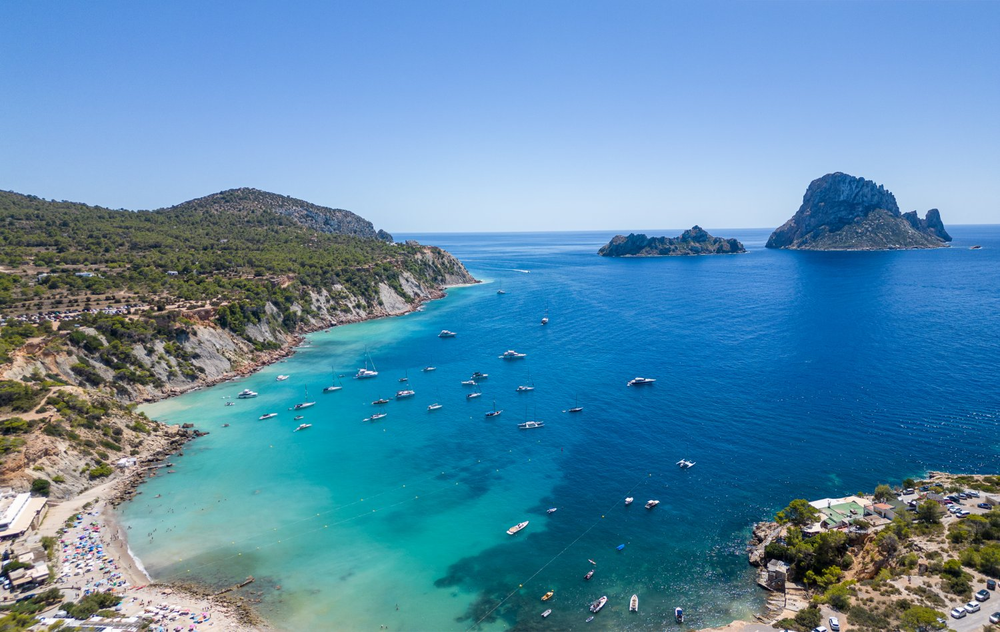
One of Ibiza's most iconic beaches with a breathtaking view of the mystical Es Vedrà rock. The water is crystal-clear and the atmosphere truly magical — especially at sunset. A mix of sand and pebbles, so bring water shoes. There are two small chiringuitos for drinks and snacks. Arrive early in summer as parking fills up fast.
Einer der bekanntesten Strände Ibizas mit einem atemberaubenden Blick auf den mystischen Felsen Es Vedrà. Das Wasser ist kristallklar und die Atmosphäre besonders bei Sonnenuntergang magisch. Ein Mix aus Sand und Kiesel — Badeschuhe empfehlenswert. Es gibt zwei kleine Chiringuitos für Getränke und Snacks. Im Sommer früh kommen, die Parkplätze sind schnell voll.
Platges de Comte
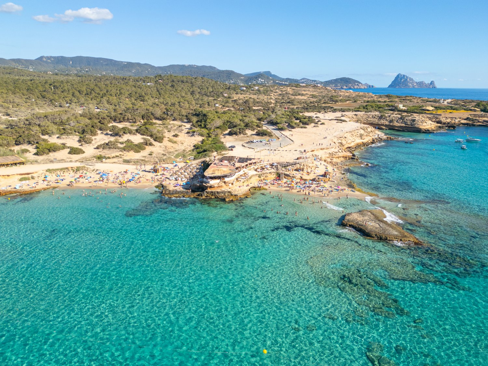
Often voted Ibiza's most beautiful beach — and for good reason. A series of small sandy coves with impossibly turquoise water and views of the offshore islands. The sunsets here are legendary. Several beach bars and restaurants along the shore. Gets busy in peak season, so an early arrival is key.
Wird oft zum schönsten Strand Ibizas gewählt — und das zu Recht. Mehrere kleine Sandbuchten mit unglaublich türkisem Wasser und Blick auf die vorgelagerten Inseln. Die Sonnenuntergänge hier sind legendär. Mehrere Strandbars und Restaurants entlang der Küste. In der Hochsaison kann es voll werden, also am besten früh kommen.
Cala Salada
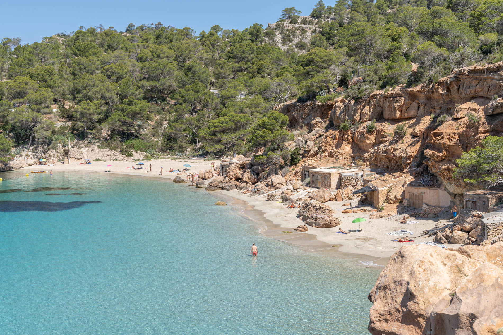
A hidden gem tucked between pine-covered cliffs near San Antonio. The water is an incredible shade of turquoise. In high season, car access is restricted — you'll need to take a shuttle bus or walk down from the parking area. Totally worth the effort! Next to it you'll find the smaller Cala Saladeta, which is even more secluded.
Ein verstecktes Juwel zwischen pinienbedeckten Klippen nahe San Antonio. Das Wasser hat ein unglaubliches Türkis. In der Hochsaison ist die Zufahrt gesperrt — man muss den Shuttlebus nehmen oder vom Parkplatz hinunterlaufen. Absolut lohnenswert! Nebenan liegt die kleinere Cala Saladeta, die noch abgeschiedener ist.
Cala Bassa
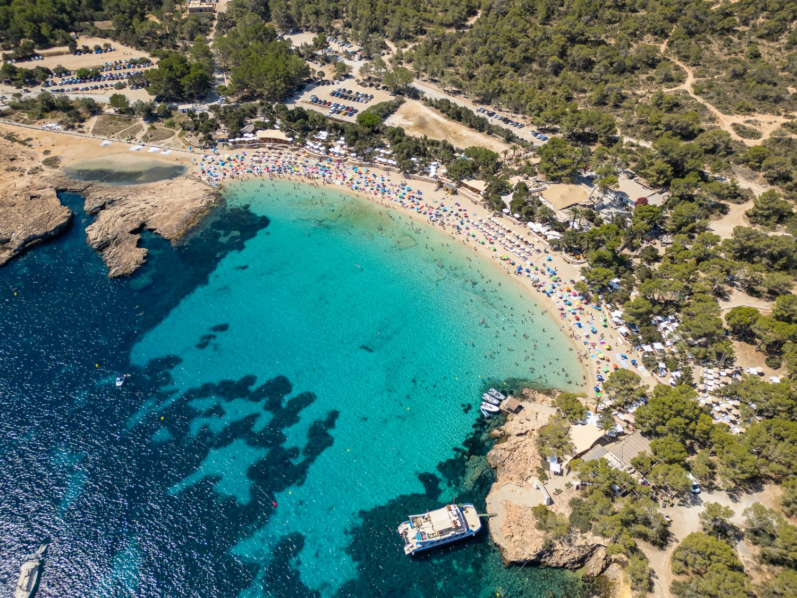
A large, family-friendly bay with soft sand and shallow turquoise water. Pine trees along the shore provide natural shade — perfect if you want a break from the sun. Home to the popular CBbC Beach Club with great food and music. Easy to reach from San Antonio and plenty of parking available.
Eine große, familienfreundliche Bucht mit feinem Sand und flachem türkisem Wasser. Pinien am Ufer spenden natürlichen Schatten — perfekt für eine Pause von der Sonne. Hier befindet sich der beliebte CBbC Beach Club mit gutem Essen und Musik. Leicht von San Antonio erreichbar mit ausreichend Parkplätzen.
Ses Salinas
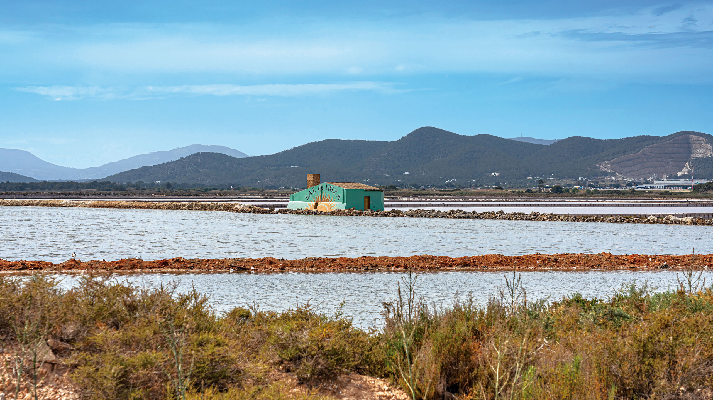
A long, stunning beach in the south of the island, part of a protected natural park. Known for its trendy beach clubs like Sa Trinxa and Jockey Club, yet still retaining a relaxed bohemian vibe. The shallow, crystal-clear water stretches for hundreds of metres. Great for a full beach day with good food and drinks right on the sand.
Ein langer, wunderschöner Strand im Süden der Insel, Teil eines geschützten Naturparks. Bekannt für trendige Beachclubs wie Sa Trinxa und Jockey Club, aber dennoch mit einer entspannten, bohemischen Atmosphäre. Das flache, kristallklare Wasser erstreckt sich über hunderte Meter. Perfekt für einen ganzen Strandtag mit gutem Essen und Drinks direkt am Sand.
Cala Tarida
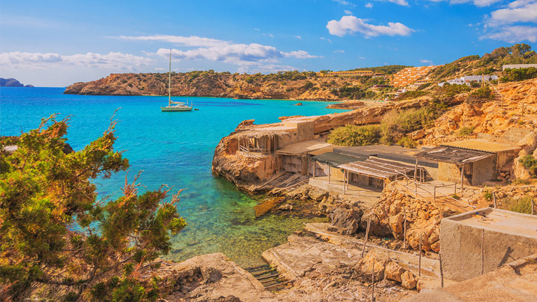
A wide, golden sandy beach on the west coast with calm, shallow waters — ideal for swimming. The beach faces west, making it one of the best spots to watch the sunset. Several good restaurants and beach bars nearby. Less crowded than some of the more famous beaches, with a relaxed and welcoming atmosphere.
Ein breiter, goldener Sandstrand an der Westküste mit ruhigem, flachem Wasser — ideal zum Schwimmen. Der Strand liegt nach Westen, was ihn zu einem der besten Orte für Sonnenuntergänge macht. Mehrere gute Restaurants und Strandbars in der Nähe. Weniger überlaufen als andere bekannte Strände, mit einer entspannten und einladenden Atmosphäre.
Cala Jondal
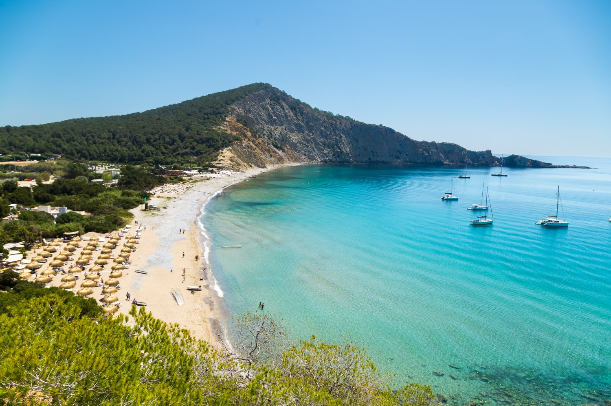
Home to the famous Blue Marlin beach club — one of Ibiza's most glamorous beach spots. A pebble beach with crystal-clear water surrounded by dramatic cliffs. The vibe here is upscale and lively, perfect for those who enjoy a see-and-be-seen atmosphere. Several excellent restaurants and cocktail bars along the shore.
Heimat des berühmten Blue Marlin Beach Clubs — einer der glamourösesten Strandorte Ibizas. Ein Kiesstrand mit kristallklarem Wasser, umgeben von dramatischen Klippen. Die Atmosphäre ist gehoben und lebhaft, perfekt für alle, die die Sehen-und-gesehen-werden-Szene mögen. Mehrere ausgezeichnete Restaurants und Cocktailbars entlang der Küste.
Cala Nova
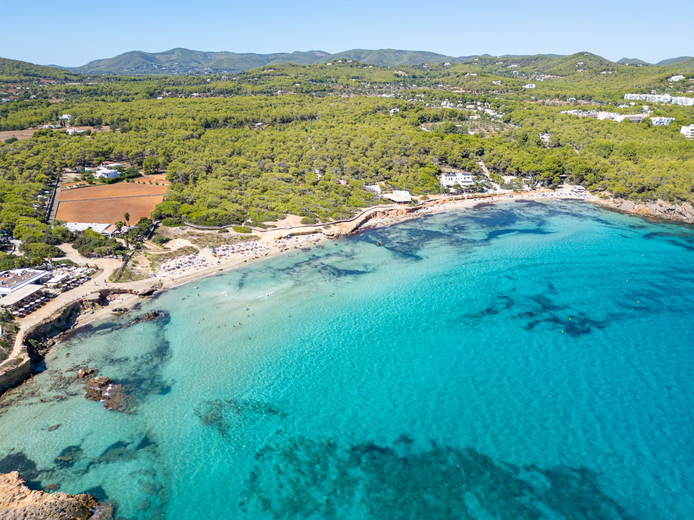
A beautiful wide beach on the east coast, popular with surfers when the waves pick up. Soft golden sand and a laid-back, bohemian feel — close to the famous Atzaró agrotourism hotel and the Las Dalias hippy market. Great beach restaurants like Atzaró Beach and Aiyanna serve fresh Mediterranean food with your feet in the sand.
Ein wunderschöner breiter Strand an der Ostküste, bei Surfern beliebt wenn die Wellen aufkommen. Weicher goldener Sand und ein entspanntes, bohemisches Flair — nahe dem berühmten Agrotourismus-Hotel Atzaró und dem Hippiemarkt Las Dalias. Tolle Strandrestaurants wie Atzaró Beach und Aiyanna servieren frische mediterrane Küche mit den Füßen im Sand.
Benirras
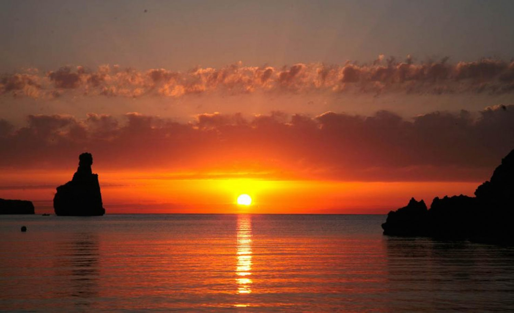
A magical cove in the north, famous for its Sunday sunset drum circles where locals and visitors gather to play music as the sun goes down behind the iconic Cap Bernat rock. The atmosphere is bohemian and spiritual — a true Ibiza experience. The beach is pebbly with calm, clear water. Come early on Sundays to grab a spot, or visit on other days for a more peaceful swim.
Eine magische Bucht im Norden, berühmt für die sonntäglichen Trommelkreise bei Sonnenuntergang, bei denen Einheimische und Besucher gemeinsam Musik machen, während die Sonne hinter dem markanten Felsen Cap Bernat verschwindet. Die Atmosphäre ist bohemisch und spirituell — ein echtes Ibiza-Erlebnis. Der Strand ist kiesig mit ruhigem, klarem Wasser. Sonntags früh kommen um einen Platz zu sichern, oder an anderen Tagen für ein ruhigeres Bad vorbeischauen.
S'Espartar

A true institution in Sant Josep, S'Espartar is one of the island's finest traditional fish restaurants. The family-run kitchen specialises in rice dishes, Bullit de Peix (the classic Ibizan fish stew) and fresh catch of the day — all prepared with recipes passed down through generations. Very popular with locals, which is always a good sign. Book ahead, especially on weekends.
Eine echte Institution in Sant Josep — S'Espartar ist eines der besten traditionellen Fischrestaurants der Insel. Die familiengeführte Küche ist spezialisiert auf Reisgerichte, Bullit de Peix (den klassischen ibizenkischen Fischeintopf) und fangfrischen Tagesfisch — alles nach Rezepten, die seit Generationen weitergegeben werden. Sehr beliebt bei Einheimischen, was immer ein gutes Zeichen ist. Reservierung empfohlen, besonders am Wochenende.
Bargrill Llumbi

A hidden gem in Es Cubells with one of the best views on the entire island. This small, family-run grill serves simple, fresh Mediterranean food with love and attention — garlic prawns, grilled sole, and superb homemade desserts. The portions are generous and the prices unbeatable. Limited seating, so booking is essential. If something isn't on the menu, they'll cook it for you.
Ein Geheimtipp in Es Cubells mit einer der besten Aussichten auf der gesamten Insel. Dieser kleine, familiär geführte Grill serviert einfaches, frisches mediterranes Essen mit Liebe und Sorgfalt — Knoblauchgarnelen, gegrillte Seezunge und hervorragende hausgemachte Desserts. Die Portionen sind großzügig und die Preise unschlagbar. Begrenzte Plätze, Reservierung unbedingt empfohlen. Wenn etwas nicht auf der Karte steht, kochen sie es auf Wunsch.
Tropicana
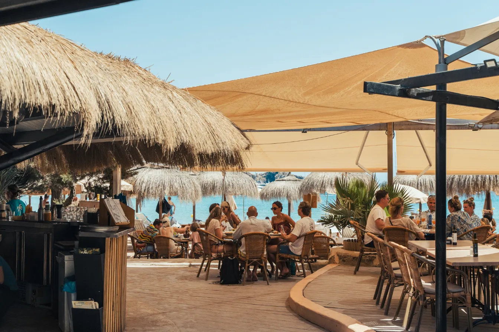
One of our absolute favourites! Tropicana has been a Cala Jondal institution since 1988, run by the same family ever since. The Mediterranean kitchen serves incredible fresh fish — try the sea bass in salt crust or the tuna tartar. Beyond the restaurant, there are sun loungers with waiter service, a massage pavilion and even a kids' area. The perfect spot for an entire beach day with amazing food. Booking recommended.
Einer unserer absoluten Favoriten! Tropicana ist seit 1988 eine Institution an der Cala Jondal, geführt von der gleichen Familie. Die mediterrane Küche serviert unglaublich frischen Fisch — probiert den Wolfsbarsch in Salzkruste oder das Thunfisch-Tartar. Neben dem Restaurant gibt es Sonnenliegen mit Kellnerservice, einen Massage-Pavillon und sogar einen Kinderbereich. Der perfekte Ort für einen ganzen Strandtag mit fantastischem Essen. Reservierung empfohlen.
Ses Boques

Perched on the dramatic cliffs of Es Cubells with stunning views across to Formentera. This seafood restaurant sits right on a tiny, secluded beach and serves some of the freshest fish on the island — the lobster with garlic and fried eggs is legendary, as is the sea bass in salt. More locals than tourists, which says it all. Open from lunch until sunset in summer. Definitely book a table, especially in July and August.
Auf den dramatischen Klippen von Es Cubells gelegen, mit atemberaubendem Blick auf Formentera. Dieses Fischrestaurant liegt direkt an einem kleinen, abgeschiedenen Strand und serviert den frischesten Fisch der Insel — der Hummer mit Knoblauch und Spiegelei ist legendär, ebenso der Wolfsbarsch in Salzkruste. Mehr Einheimische als Touristen, was alles sagt. Im Sommer von mittags bis Sonnenuntergang geöffnet. Reservierung unbedingt empfohlen, besonders im Juli und August.
Restaurante Sa Caleta

Run by the Pujolet family — descendants of local fishermen — since 1988, Sa Caleta is nestled between ochre cliffs and turquoise sea on a picturesque little beach. The menu is all about traditional Ibizan seafood: Bullit de Peix, lobster stew, and beautifully baked fish. Don't leave without trying the famous Café Caleta — a flambéed mix of brandy, cinnamon, citrus and coffee, invented by the family's grandfather. Open all year round, one of the few beach restaurants that never closes.
Seit 1988 von der Familie Pujolet — Nachkommen lokaler Fischer — geführt, liegt Sa Caleta eingebettet zwischen ockerfarbenen Klippen und türkisem Meer an einem malerischen kleinen Strand. Auf der Karte stehen traditionelle ibizenkische Meeresfrüchte: Bullit de Peix, Hummersuppe und wunderbar gebackener Fisch. Unbedingt den berühmten Café Caleta probieren — ein flambierter Mix aus Brandy, Zimt, Zitrus und Kaffee, erfunden vom Großvater der Familie. Ganzjährig geöffnet — eines der wenigen Strandrestaurants, das nie schließt.
Es Boldado

Possibly the most iconic dining view in all of Ibiza — perched high on a cliff edge above Cala d'Hort, looking straight out at the mystical Es Vedrà and Es Vedranell islands. The Tur Torres family has run this place for over 30 years, serving excellent fish, rice dishes and their famous Bullit de Peix. No phone signal up here, which only adds to the magic. Access is via a dusty dirt track — that's part of the adventure. A sunset dinner here is unforgettable.
Vermutlich die ikonischste Restaurant-Aussicht auf ganz Ibiza — hoch auf einer Klippe über der Cala d'Hort, mit direktem Blick auf die mystischen Inseln Es Vedrà und Es Vedranell. Die Familie Tur Torres führt diesen Ort seit über 30 Jahren und serviert exzellenten Fisch, Reisgerichte und den berühmten Bullit de Peix. Kein Handyempfang hier oben, was den Zauber nur verstärkt. Die Zufahrt über eine staubige Schotterpiste gehört zum Abenteuer dazu. Ein Abendessen bei Sonnenuntergang hier ist unvergesslich.
Ses Roques

Sitting on the rugged cliffs of Cala Conta, Ses Roques combines excellent seafood with what might be Ibiza's most beautiful sunset panorama. The rustic wooden terrace with candlelit tables creates an intimate, romantic atmosphere — perfect for a special evening. The seafood paella and fresh fish are outstanding. Dinner service starts in the late afternoon, timed perfectly for sunset. One of our go-to spots.
Auf den rauen Klippen der Cala Conta gelegen, verbindet Ses Roques hervorragende Meeresfrüchte mit dem vielleicht schönsten Sonnenuntergangspanorama Ibizas. Die rustikale Holzterrasse mit kerzenbeschienenen Tischen schafft eine intime, romantische Atmosphäre — perfekt für einen besonderen Abend. Die Meeresfrüchte-Paella und der frische Fisch sind hervorragend. Der Abendservice beginnt am späten Nachmittag, perfekt getimt für den Sonnenuntergang. Einer unserer Stammorte.
Cala Escondida

Sabrina's favourite chiringuito — and for good reason. This 100% sustainable beach bar sits in a tiny cove right next to Cala Comte, run by solar power and with zero waste. No music here, just the sound of the waves. The menu is simple and delicious with great vegetarian and vegan options — try the curry chicken wrap or the homemade guacamole. No reservations, just show up and grab a spot. The kind of place that makes you fall in love with Ibiza.
Sabrinas Lieblings-Chiringuito — und das aus gutem Grund. Diese 100% nachhaltige Strandbar liegt in einer kleinen Bucht direkt neben Cala Comte, betrieben mit Solarstrom und Zero Waste. Keine Musik hier, nur das Rauschen der Wellen. Die Karte ist einfach und köstlich, mit tollen vegetarischen und veganen Optionen — probiert den Curry-Chicken-Wrap oder die hausgemachte Guacamole. Keine Reservierung, einfach vorbeikommen und einen Platz ergattern. Die Art von Ort, die einen in Ibiza verlieben lässt.
Hostal La Torre

Set on the rocky outcrops of Cap Negret just outside San Antonio, La Torre is the ultimate sunset experience. The terrace offers uninterrupted views over the Mediterranean, accompanied by resident DJs spinning a truly Balearic soundtrack. Their cocktail list is exceptional — try the signature "La Torre Sunset" with vodka, strawberry, lemon and cava. The Mediterranean kitchen serves sharing-style tapas, fresh seafood and hearty mains. Come for sunset, stay for dinner.
Auf den felsigen Klippen von Cap Negret kurz außerhalb von San Antonio gelegen, bietet La Torre das ultimative Sonnenuntergangs-Erlebnis. Die Terrasse bietet freien Blick über das Mittelmeer, begleitet von Resident-DJs mit einem echten Balearic-Soundtrack. Die Cocktailkarte ist herausragend — probiert den Signature-Cocktail "La Torre Sunset" mit Wodka, Erdbeere, Zitrone und Cava. Die mediterrane Küche serviert Tapas zum Teilen, frische Meeresfrüchte und herzhafte Hauptgerichte. Zum Sonnenuntergang kommen, zum Abendessen bleiben.
Rita's Cantina

A San Antonio institution since 1995, Rita's is the perfect spot for a relaxed breakfast or lunch overlooking the marina. Their famous club sandwich has been on the menu since day one, and the crepes are excellent too. Fresh juices, quality coffee, and a great outdoor terrace with harbour views. Open from 8am, no reservations — just walk in. Affordable and consistently good.
Eine Institution in San Antonio seit 1995 — Rita's ist der perfekte Ort für ein entspanntes Frühstück oder Mittagessen mit Blick auf den Yachthafen. Das berühmte Club Sandwich steht seit Tag eins auf der Karte, und die Crêpes sind ebenfalls hervorragend. Frische Säfte, guter Kaffee und eine tolle Außenterrasse mit Hafenblick. Geöffnet ab 8 Uhr, keine Reservierung — einfach reinkommen. Günstig und konstant gut.
Es Nautic

Located over the pontoons of the Sant Antoni Yacht Club, Es Nautic offers modern, sleek architecture that seems to emerge from the sea. The views across the bay are stunning, and the harbour is filled with traditional Ibizan llaüt boats. Fresh fish, seafood, rice dishes and a great wine selection — the non-stop kitchen from 1pm makes it ideal for a leisurely lunch. In summer, the upper terrace opens for sunset cocktails. A real local gem.
Über den Stegen des Sant Antoni Yacht Clubs gelegen, besticht Es Nautic durch moderne, elegante Architektur, die direkt aus dem Meer zu wachsen scheint. Der Blick über die Bucht ist atemberaubend, und der Hafen ist voller traditioneller ibizenkischer Llaüt-Boote. Frischer Fisch, Meeresfrüchte, Reisgerichte und eine tolle Weinauswahl — die durchgehend geöffnete Küche ab 13 Uhr macht es ideal für ein ausgedehntes Mittagessen. Im Sommer öffnet die obere Terrasse für Sunset-Cocktails. Ein echtes Juwel der Einheimischen.
Bar Can Berri

Set in an old traditional Ibizan house next to the beautiful Church of Sant Agustí, Can Berri opens its enchanting back garden in summer — tables tucked closely together beneath orange and carob trees, with tiny lamps creating a magical atmosphere under the stars. The food is simple but delicious, using high-quality local produce. Locals and tourists mingle here over good wine and honest cooking. One of the most romantic dinner spots on the island.
In einem alten, traditionellen ibizenkischen Haus neben der wunderschönen Kirche von Sant Agustí gelegen, öffnet Can Berri im Sommer seinen zauberhaften Garten — Tische eng beieinander unter Orangen- und Johannisbrotbäumen, mit kleinen Lämpchen, die unter dem Sternenhimmel eine magische Atmosphäre schaffen. Das Essen ist einfach, aber köstlich, mit hochwertigen lokalen Produkten. Einheimische und Touristen treffen sich hier bei gutem Wein und ehrlicher Küche. Einer der romantischsten Dinner-Orte der Insel.
Bar Can Bellotera

Located in the village of Sant Jordi, this unassuming local bar serves what many consider the best bocadillos (sandwiches) on the entire island. Fresh ingredients and homemade flavours. Perfect for a quick breakfast or lunch stop. The goat cheese salad and the hamburgers are also excellent. A bit off the beaten path, but absolutely worth a visit.
In Sant Jordi gelegen, serviert diese unscheinbare Bar, was viele als die besten Bocadillos (Sandwiches) der gesamten Insel betrachten. Frische Zutaten und hausgemachte Aromen. Perfekt für ein schnelles Frühstück oder Mittagessen. Der Ziegenkäsesalat und die Hamburger sind ebenfalls hervorragend. Etwas abseits der üblichen Pfade, aber den Besuch absolut wert.
Experimental Beach

Hidden in the protected Ses Salines salt flats at Cap des Falco, Experimental Beach is one of Ibiza's hottest sunset destinations. Part of the renowned Experimental Cocktail Club group (Paris, London, New York), it combines exquisite Mediterranean cuisine with bespoke cocktails and a bohemian-chic atmosphere. Luxe sunbeds, Acapulco chairs, and an outdoor dining room designed by Dorothée Meilichzon. Be prepared for an adventurous road to get there — the bumpy dirt track is part of the experience. Restaurant open non-stop from 1pm to 11pm.
Versteckt im geschützten Naturpark der Ses Salines Salzfelder am Cap des Falco, ist Experimental Beach eines der angesagtesten Sonnenuntergangsziele Ibizas. Teil der renommierten Experimental Cocktail Club Gruppe (Paris, London, New York), verbindet es exquisite mediterrane Küche mit maßgeschneiderten Cocktails und einer bohemisch-schicken Atmosphäre. Luxuriöse Sonnenliegen, Acapulco-Stühle und ein Outdoor-Speisebereich gestaltet von Dorothée Meilichzon. Seid auf eine abenteuerliche Anfahrt gefasst — die holprige Schotterpiste gehört zum Erlebnis. Restaurant durchgehend geöffnet von 13 bis 23 Uhr.
Restaurante C'an Alfredo

One of the oldest restaurants on Ibiza, serving authentic Ibizan and Mediterranean cuisine since 1934. Located on the elegant Passeig de Vara de Rey in Ibiza Town, this family-run institution is famous for its paella and traditional seafood dishes made with the best local produce. A true piece of Ibiza history — the kind of place where generations of islanders have celebrated special occasions. The homemade desserts are also worth saving room for.
Eines der ältesten Restaurants auf Ibiza, das seit 1934 authentische ibizenkische und mediterrane Küche serviert. Am eleganten Passeig de Vara de Rey in Ibiza-Stadt gelegen, ist dieses familiengeführte Traditionshaus berühmt für seine Paella und traditionelle Meeresfrüchtegerichte aus besten lokalen Produkten. Ein echtes Stück Ibiza-Geschichte — die Art von Ort, an dem Generationen von Inselbewohnern besondere Anlässe gefeiert haben. Für die hausgemachten Desserts lohnt es sich, Platz aufzuheben.
La Bodega

Tucked away at the foot of the Dalt Vila walls, right next to the Portal de Ses Taules, La Bodega has been a favourite of locals and Ibiza regulars since 2005. Opened by Fernando and Miguel, this buzzing tapas spot serves scrumptious small plates — the patatas bravas, croquetas de jamón and chorizo are legendary. Over 60 wines, mostly Spanish, expertly curated. Grab a table on the charming sidewalk terrace and watch the world go by. The perfect start to an evening in Ibiza Town.
Versteckt am Fuße der Dalt-Vila-Mauern, direkt neben dem Portal de Ses Taules, ist La Bodega seit 2005 ein Liebling der Einheimischen und Ibiza-Stammgäste. Von Fernando und Miguel eröffnet, serviert diese lebhafte Tapas-Bar köstliche kleine Gerichte — die Patatas Bravas, Croquetas de Jamón und Chorizo sind legendär. Über 60 Weine, größtenteils spanisch, sorgfältig ausgewählt. Einen Tisch auf der charmanten Terasse ergattern und das Treiben beobachten. Der perfekte Start für einen Abend in Ibiza-Stadt.
Fish Shack

A tiny shack on the rocks at the very end of Talamanca beach — no menu, no phone number, no reservations. The waiter simply tells you the fresh catch of the day, it gets grilled and served with salad and potatoes. That's it. Cash only. The views over the bay and towards Ibiza Town are stunning, especially at sunset. Only open in summer and completely dismantled in winter. First come, first served — get there early.
Eine winzige Hütte auf den Felsen am äußersten Ende des Strandes von Talamanca — keine Speisekarte, keine Telefonnummer, keine Reservierungen. Der Kellner sagt einfach, was heute gefangen wurde, es wird gegrillt und mit Salat und Kartoffeln serviert. Das war's. Nur Barzahlung. Der Blick über die Bucht und auf Ibiza-Stadt ist atemberaubend, besonders bei Sonnenuntergang. Nur im Sommer geöffnet und im Winter komplett abgebaut. Wer zuerst kommt, mahlt zuerst — früh da sein.
Bar Anita

Known as the "first hippie bar" of Ibiza, Bar Anita (Ca n'Anneta) has been a gathering place in San Carlos since 1960 — right next to the village church. Once the local post office and meeting point during the hippie era, it still radiates that authentic, bohemian spirit. The tapas are excellent: try the fried octopus, montaditos and the homemade Hierbas Ibicencas — a traditional herbal liqueur made by the family for over a century. Rustic furniture, warm atmosphere, a piece of living history.
Bekannt als die "erste Hippie-Bar" Ibizas, ist Bar Anita (Ca n'Anneta) seit 1960 ein Treffpunkt in San Carlos — direkt neben der Dorfkirche. Einst das lokale Postamt und Treffpunkt während der Hippie-Ära, strahlt sie noch immer diesen authentischen, bohemischen Geist aus. Die Tapas sind hervorragend: probiert den gebratenen Oktopus, die Montaditos und die hausgemachten Hierbas Ibicencas — ein traditioneller Kräuterlikör, den die Familie seit über einem Jahrhundert herstellt. Rustikale Möbel, warme Atmosphäre, ein Stück lebendige Geschichte.
Aubergine
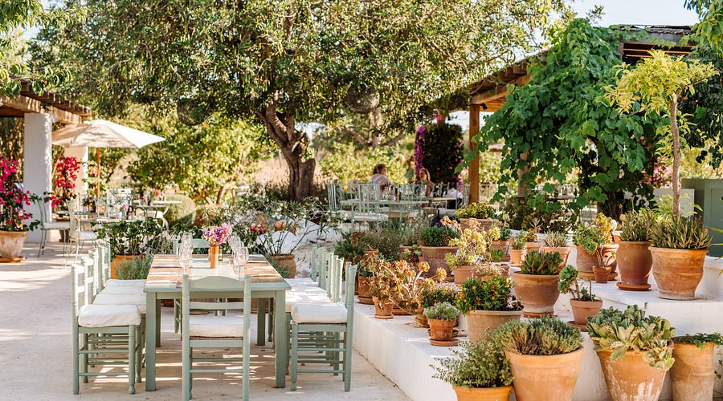
Aubergine by Atzaró is a truly magical dining experience. A beautifully restored white finca set in rambling gardens between Santa Gertrudis and San Miguel, with multiple dining terraces, pergolas and lounge areas. The farm-to-table kitchen celebrates nature with organic local produce — fresh seafood, grilled meats, colourful salads, and excellent vegetarian and vegan options. Whether you dine inside under sabina-beamed ceilings or outside under the stars, it feels like a special occasion. An Ibiza must-do. Book ahead.
Aubergine by Atzaró ist ein wirklich magisches Esserlebnis. Eine wunderschön restaurierte weiße Finca inmitten weitläufiger Gärten zwischen Santa Gertrudis und San Miguel, mit mehreren Essterrassen, Pergolen und Lounge-Bereichen. Die Farm-to-Table-Küche feiert die Natur mit biologischen lokalen Produkten — frische Meeresfrüchte, gegrilltes Fleisch, bunte Salate und ausgezeichnete vegetarische und vegane Optionen. Ob drinnen unter Sabina-Holzbalkendecken oder draußen unter dem Sternenhimmel — es fühlt sich immer wie ein besonderer Anlass an. Ein Ibiza-Muss. Vorher reservieren.
Cami de Balafia

The holy grail of grilled meat in Ibiza. This rustic, family-run restaurant in Sant Llorenç de Balàfia serves charcoal-grilled rabbit, chicken and mixed platters alongside a simple tomato-onion salad and hand-peeled chips (the grandfather does the peeling). Finish with traditional Ibizan desserts and a homemade hierbas liqueur. Cash only, no cards accepted. Always busy in summer, so booking is essential. Closed on Sundays.
Der heilige Gral des Grillfleischs auf Ibiza. Dieses rustikale, familiengeführte Restaurant in Sant Llorenç de Balàfia serviert über Holzkohle gegrilltes Kaninchen, Hühnchen und gemischte Platten zusammen mit einem einfachen Tomaten-Zwiebel-Salat und handgeschälten Pommes (der Großvater schält sie). Zum Abschluss traditionelle ibizenkische Desserts und einen hausgemachten Hierbas-Likör. Nur Barzahlung, keine Karten. Im Sommer immer voll, daher Reservierung unbedingt nötig. Sonntags geschlossen.
Old Town & Fortress
Altstadt & Festung

Dalt Vila is Ibiza's fortified old town — a UNESCO World Heritage Site since 1999, with over 2,500 years of history. Walk through the Portal de Ses Taules, wind your way up through a labyrinth of narrow cobblestone streets, past the Cathedral of Santa María de las Nieves, the Almudaina Castle and charming little squares with breathtaking panoramic views of the harbour and the sea. The Renaissance-era defensive walls stand 25 metres high and up to 5 metres thick — the best preserved coastal fortress in the entire Mediterranean. Magical at any time of day, but especially stunning at sunset. A must-see.
Dalt Vila ist Ibizas befestigte Altstadt — seit 1999 UNESCO-Weltkulturerbe, mit über 2.500 Jahren Geschichte. Durch das Portal de Ses Taules eintreten und sich durch ein Labyrinth enger Kopfsteinpflastergassen nach oben schlängeln, vorbei an der Kathedrale Santa María de las Nieves, der Burg Almudaina und charmanten kleinen Plätzen mit atemberaubendem Panoramablick auf Hafen und Meer. Die Renaissance-Festungsmauern sind 25 Meter hoch und bis zu 5 Meter dick — die besterhaltene Küstenfestung im gesamten Mittelmeerraum. Magisch zu jeder Tageszeit, besonders atemberaubend bei Sonnenuntergang. Ein absolutes Muss.
Can Jordi — Live Music

Known in music circles as "Can Jordi Blues Station", this century-old former grocery store on the road between Ibiza Town and Sant Josep has become one of the most genuine spots on the island. Part bar, part art gallery, part live music stage — with jam sessions featuring well-known and even world-famous musicians performing right by the pavement. Live music on Thursday evenings and Saturday afternoons. Grab a drink, sit outside, and let the music carry you away. The kind of place you won't find in any guidebook.
In Musikerkreisen als "Can Jordi Blues Station" bekannt, hat sich dieser hundertjährige ehemalige Dorfladen an der Straße zwischen Ibiza-Stadt und Sant Josep zu einem der authentischsten Orte der Insel entwickelt. Teils Bar, teils Kunstgalerie, teils Live-Musik-Bühne — mit Jam Sessions, bei denen bekannte und sogar weltberühmte Musiker direkt am Straßenrand spielen. Live-Musik Donnerstag abends und Samstag nachmittags. Ein Getränk schnappen, draußen sitzen und sich von der Musik mitreißen lassen. Die Art von Ort, die in keinem Reiseführer steht.
Nightlife
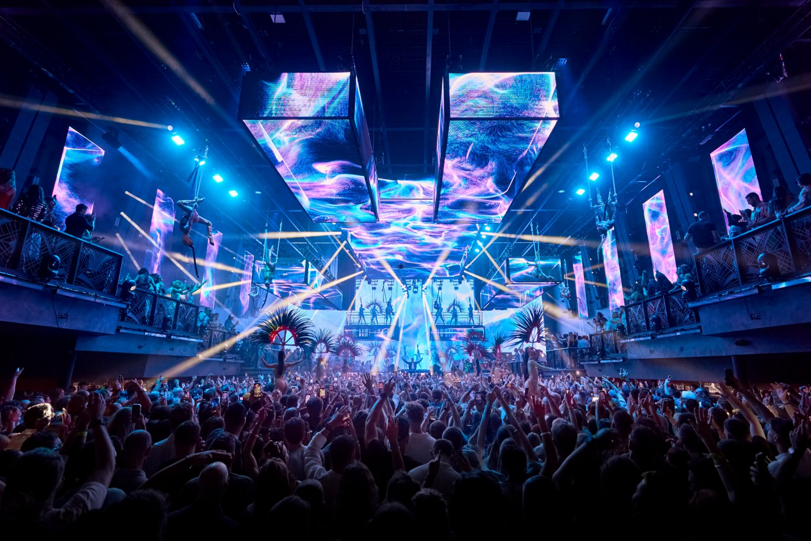
Ibiza is the clubbing capital of the world — and even if you're not a club person, experiencing at least one night out here is something special. The season runs from late April to mid-October, with the biggest names in electronic music taking up residencies. Our recommendations:
Ibiza ist die Clubbing-Hauptstadt der Welt — und selbst wenn man kein Club-Typ ist, ist mindestens eine Nacht hier etwas Besonderes. Die Saison läuft von Ende April bis Mitte Oktober, mit den größten Namen der elektronischen Musik als Residents. Unsere Empfehlungen:
- Pacha — the icon, open since 1973die Ikone, offen seit 1973
- Hï — world-class sound & lightSound & Licht der Weltklasse
- DC10 — underground techno, especially Mondays!Underground-Techno, insbesondere Montags!
- Ushuaia — iconic open-air day partyikonische Open-Air Day-Party
- UNVRS — the new superclub (formerly Privilege)der neue Superclub (ehem. Privilege)
- Cova Santa — Day Party
- Destino — Day Party
Sunset Spots
Sonnenuntergang

Watching the sunset is a daily ritual on Ibiza. Pack some drinks, snacks and a blanket, find a spot on the south-west coast and let the magic happen. The entire western shoreline is spectacular, but these are our favourites:
Den Sonnenuntergang zu schauen ist ein tägliches Ritual auf Ibiza. Getränke, Snacks und eine Decke einpacken, einen Platz an der Südwestküste finden und den Zauber genießen. Die gesamte Westküste ist spektakulär, aber das sind unsere Favoriten:
- Punta Galera — flat rock terraces, swimming & cliff jumpingflache Felsplattformen, Schwimmen & Klippenspringen
- Time and Space — art installation with stunning viewsKunstinstallation mit atemberaubendem Blick
- Torre des Savinar — ancient watchtower overlooking Es Vedràalter Wachturm mit Blick auf Es Vedrà
Aquarium Cap Blanc

A unique natural cave near Cala Gració — formerly a lobster hatchery, now converted into an atmospheric aquarium showcasing Mediterranean marine life. The 400 sqm cave has sea water constantly circulating, creating perfect conditions for the fish. But the real highlight: on summer evenings they serve "sardinadas" — spit-roasted sardines with country salad, right by the sea. Two shifts at 8:30pm and 10:30pm. Also a great spot to watch the sunset. Small, charming and completely different from anything else on the island.
Eine einzigartige Naturhöhle nahe Cala Gració — früher eine Hummerzucht, heute ein stimmungsvolles Aquarium mit mediterranem Meeresleben. In der 400 qm großen Höhle zirkuliert ständig Meerwasser und schafft perfekte Bedingungen für die Fische. Aber das eigentliche Highlight: An Sommerabenden gibt es "Sardinadas" — am Spieß gegrillte Sardinen mit Bauernsalat direkt am Meer. Zwei Schichten um 20:30 und 22:30 Uhr. Auch ein toller Ort für den Sonnenuntergang. Klein, charmant und komplett anders als alles andere auf der Insel.
Hippy Market Las Dalias

Born on Valentine's Day 1985, Las Dalias in Sant Carles is a colourful oasis of over 200 stalls selling handmade jewellery, Ibizan fashion, artisanal crafts, local salt, aloe vera products and hierbas ibicencas. Open Saturdays from February to November (from 10am), and Sundays in spring and autumn (from 11am). In summer, the night market runs on Sunday, Monday and Tuesday evenings — a more relaxed version with live music and a magical atmosphere. Can get very busy in August (up to 20,000 visitors on Saturdays!), so come early for the best experience.
Am Valentinstag 1985 geboren, ist Las Dalias in Sant Carles eine farbenfrohe Oase mit über 200 Ständen — handgemachter Schmuck, ibizenkische Mode, Kunsthandwerk, lokales Salz, Aloe-Vera-Produkte und Hierbas Ibicencas. Geöffnet samstags von Februar bis November (ab 10 Uhr) und sonntags im Frühling und Herbst (ab 11 Uhr). Im Sommer gibt es den Nachtmarkt sonntags, montags und dienstags abends — eine entspanntere Version mit Live-Musik und magischer Atmosphäre. Im August kann es sehr voll werden (bis zu 20.000 Besucher samstags!), also früh kommen für das beste Erlebnis.
Formentera
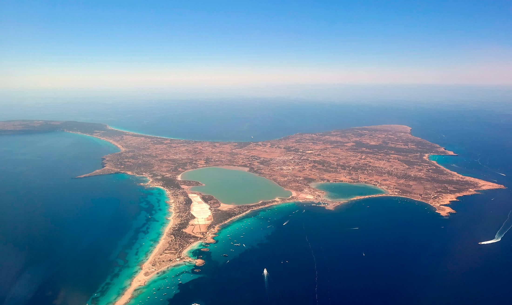
Ibiza's little sister island is just a 30-minute ferry ride away and absolutely worth a day trip. The beaches — especially Platja de Ses Illetes — are Caribbean-level pristine with powdery white sand and impossibly clear water. The best way to explore is by scooter: pick one up right at the La Savina ferry terminal. Take an early ferry out and a late one back to make the most of it. The island is small enough to cover in a day — ride from beach to beach, stop for lunch, and soak it all in.
Ibizas kleine Schwesterinsel ist nur 30 Minuten mit der Fähre entfernt und absolut einen Tagesausflug wert. Die Strände — besonders Platja de Ses Illetes — sind karibisch anmutend mit pudrigem weißem Sand und unglaublich klarem Wasser. Am besten mit dem Roller erkunden: direkt am Fährterminal La Savina abholen. Frühe Fähre hin und späte zurück nehmen, um das Maximum rauszuholen. Die Insel ist klein genug für einen Tag — von Strand zu Strand fahren, Mittagspause einlegen und alles aufsaugen.
Northern Villages
Dörfer im Norden

The north of Ibiza is a world away from the clubs and beach bars. These charming villages offer the quieter, more authentic side of the island. Santa Gertrudis sits at the geographical heart of Ibiza — a beautiful square with a whitewashed fortress church, surrounded by great restaurants, galleries and boutiques. Friday evenings bring a small artisanal market with live music. Sant Miquel, 18km north, has a 13th-century parish church and traditional folk dancing in summer. Sant Joan is the most bohemian of the three — its Sunday market with organic produce, artisanal goods and live music is a local favourite. All three are perfect for a relaxed morning or afternoon drive.
Der Norden Ibizas ist eine andere Welt als die Clubs und Strandbars. Diese charmanten Dörfer zeigen die ruhigere, authentischere Seite der Insel. Santa Gertrudis liegt im geographischen Herzen Ibizas — ein wunderschöner Platz mit weißer Festungskirche, umgeben von tollen Restaurants, Galerien und Boutiquen. Freitagabends gibt es einen kleinen Kunsthandwerksmarkt mit Live-Musik. Sant Miquel, 18km nördlich, hat eine Pfarrkirche aus dem 13. Jahrhundert und traditionelle Folkloretänze im Sommer. Sant Joan ist das bohemischste der drei — der Sonntagsmarkt mit Bio-Produkten, Kunsthandwerk und Live-Musik ist ein Favorit der Einheimischen. Alle drei sind perfekt für eine entspannte Morgen- oder Nachmittagsfahrt.
Spa Day

After all that exploring, treat yourself to a spa day! Both options offer day packages for non-hotel guests, including pool access, treatments and lunch. Book well in advance — these fill up fast:
Nach all dem Entdecken, gönne dir einen Spa-Tag! Beide Optionen bieten Tagespakete für Nicht-Hotelgäste an, inklusive Poolzugang, Behandlungen und Mittagessen. Frühzeitig buchen — die sind schnell ausgebucht:
- Agroturismo Atzaro — 43m pool, hammam, sauna, yoga, organic treatments43m Pool, Hammam, Sauna, Yoga, Bio-Behandlungen
- Hacienda Na Xamena — clifftop spa with hydrotherapy & stunning viewsKlippenrand-Spa mit Hydrotherapie & atemberaubendem Blick